2023
Novembre
- 19 (édité) — 💖 Pour un garçon de Nick Hornby
- 18 — 🎶 Akai Ito, série sortie 2008
- 12 — Balade dans la vallée de Chaudefour
-
04 —
Nouvelles de Diatomée
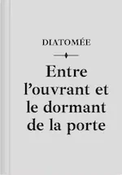
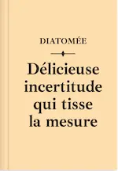
Entre l’ouvrant et le dormant de la porte, Délicieuse incertitude qui tisse la mesure, Recueil de courts textes -
04 —
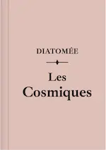
💖 Les Cosmiques 🎵 de Diatomée -
03 —
Films vus
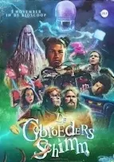
Près des yeux, près du cœur, Gran Turismo, The Ghastly brothers
Octobre
-
31 —
Les derniers films vus
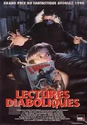
La très très grande classe, L’autre Zoey, Lectures diaboliques, Little Evil -
15 —
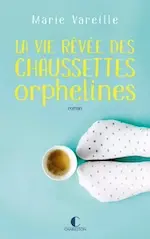
💖 La vie rêvée des chaussettes orphelines de Marie Vareille - 14 — Recette de peinture à la terre d’ocre
-
14 —
Quelques films vus récemment
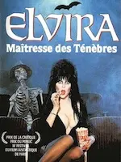
Respire, Wahou !, Elvira maîtresse des ténèbres, Les Trolls 2 -
06 —
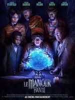
Le manoir hanté sorti en 2023 -
01 —
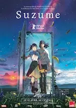
💖 Suzume no Tojimari sorti en 2023
Septembre
-
30 —
 The wonderful story of Henry Sugar sorti en 2023
The wonderful story of Henry Sugar sorti en 2023
-
24 —
 Prancer, un conte de Noël sorti en 2022
Prancer, un conte de Noël sorti en 2022
-
21 —
💖 Mes films préférés


 ♡ Orgueil et préjugés, ♡ Interstellar, ♡ Le Seigneur des Anneaux, ♡ Laggies, ♡ Tenet, ♡ Only lovers left alive, ♡ Harry Potter, ♡ Raiponce, ♡ Monster High, ♡ Twilight
♡ Orgueil et préjugés, ♡ Interstellar, ♡ Le Seigneur des Anneaux, ♡ Laggies, ♡ Tenet, ♡ Only lovers left alive, ♡ Harry Potter, ♡ Raiponce, ♡ Monster High, ♡ Twilight -
17 —
Des thrillers un peu trop hardcores
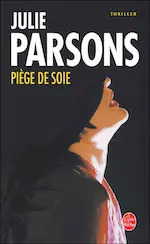
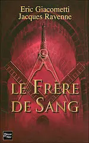
Piège de soie (Julie Parsons), Le frère de sang (Éric Giacometti et Jacques Ravenne) - 02 — Vacances à Saint-Rome de Tarn en août 2023
-
02 —
Le premier jour et La première nuit de Marc Levy
Le premier jour, La première nuit (Marc Levy)